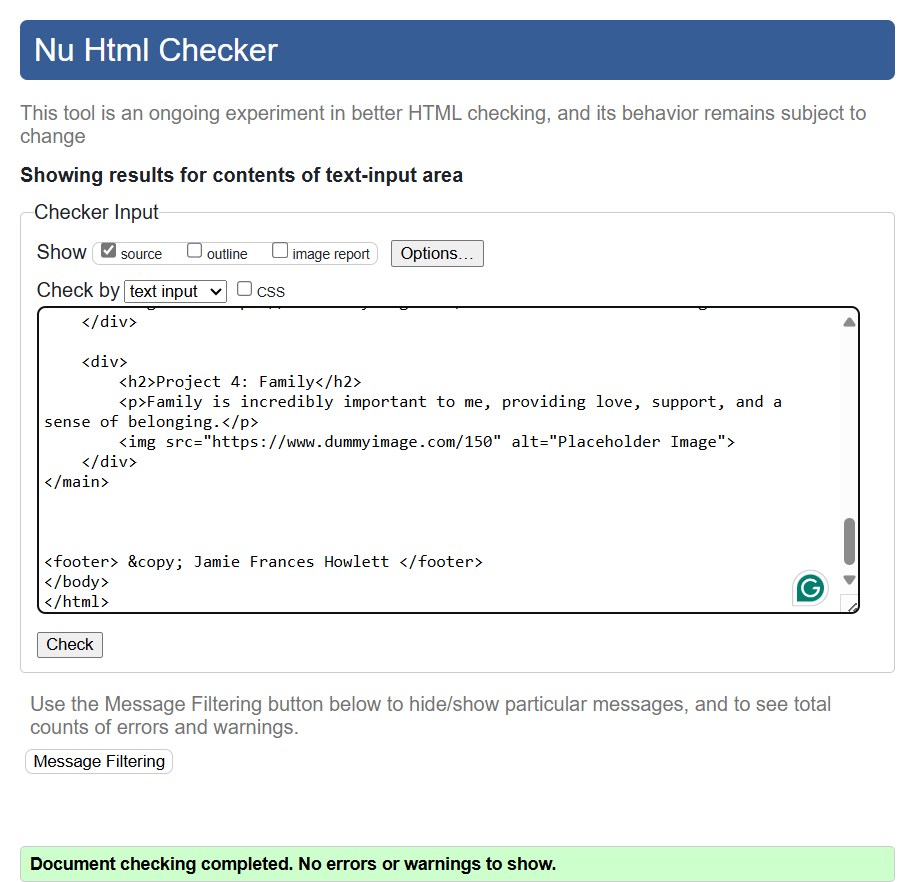

Site Report
Learning web development has been both challenging and rewarding. Throughout the term, I gained experience in coding, user interface design, and debugging, facing both successes and difficulties. This report summarizes my journey, including technical and design aspects of my site. At first, HTML and CSS seemed simple, but I soon realized the importance of structuring content properly for accessibility and SEO. Positioning elements with Flexbox and Grid took practice but mastering them allowed me to create responsive layouts effectively. Debugging was one of the toughest parts. Small errors, like missing semicolons or incorrect selectors, often caused layout issues. Learning to use browser developer tools and online resources greatly improved my troubleshooting skills. For design, I aimed for a clean, modern look. I chose Poppins, a sans-serif font, for its readability. My color scheme of soft blues and purples was inspired by minimalist trends seen on Google Material Design. I also focused on a user-friendly UI with simple navigation and mobile responsiveness. Looking back, this journey strengthened my problem-solving skills and gave me a solid foundation in front-end development. Despite challenges, seeing my website come to life was fulfilling. I intend to improve my CSS skills and include more intricate designs to attract users.
Validation Screenshots
index.html
contact.html
project.html
sitereport.html
videoDemo.html
main.css
desktop.css
mobile.css